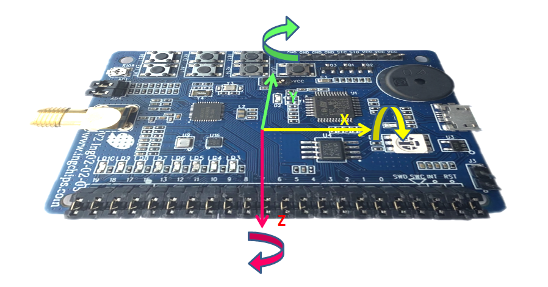
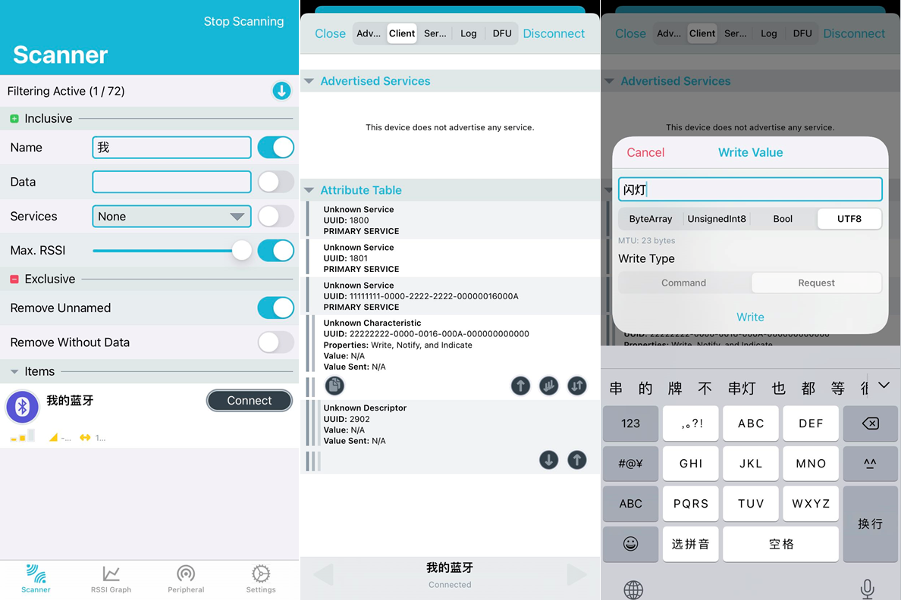
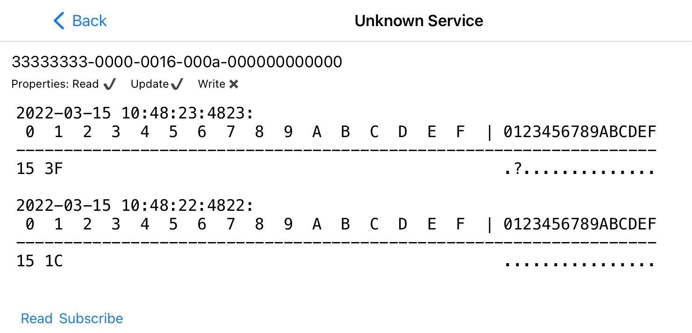

从特定角度看，SDK 上手仍然有一定难度，比如只是想实现一个极为简单的点亮 LED 功能， 需要安装开发环境、工具链，需要懂 C 语言，还需要阅读教程、查阅外设源代码。 与之对比，NodeMCU、MicroPython、Espruino 等系统使用了比 C 语言友好的 Lua、Python、JavaScript，不需要安装昂贵的开发工具， 对于点亮 LED 这种简单功能实现了开箱即用。
现在，我们为 ING9188 开发板推出了 Playground 系统， 即使没有任何开发经验，不懂英语，也能体验桃芯科技。请先参照 文档 准备好环境， 然后一起在这个游乐园里游历半日。
灯，灯，灯
点亮一盏灯可称得上是嵌入式开发里的“Hello World”。Playground 里的开灯程序如下：
开灯
点击更新按钮，稍等片刻，开发板上整排 LED 全部点亮。这个不起眼的程序还有另外一种写法：
$(开灯)
为了最大限度地降低上手难度，Playground 支持用自然语言编程。把能想到的、开发板上可能实现的动作直接写到 $(...)
里试试看。比如，开灯，等待 1000 毫秒，然后关灯：
$(开灯);
$(等待 1000 毫秒);
$(关灯);
假如想让灯亮 1 秒，灭 1 秒，循环往复，显然不能不停地重复写 $(开灯)、$(关灯)、$(开灯)、$(关灯)……
重复性的工作应该由芯片里的处理器替我们完成：
重复(
$(开灯);
$(等待 1000 毫秒);
$(关灯);
$(再等 1000 毫秒);
)
单个灯也可以用自然语言控制。比如我们要让 0 号灯和 1 号灯交替亮灭，思路如下：
- 开 0 号灯，关 1 号灯
- 延后 500 毫秒
- 把 1 号灯打开，关掉 0 号灯
- 再等会儿
- 重复执行以上步骤
于是代码就有了：
重复(
$(开 0 号灯);
$(关 1 号灯);
$(延后 500 毫秒);
$(把 1 号灯打开);
$(关掉 0 号灯);
$(再等会儿);
)
蜂鸣器
（粗略地，）蜂鸣器可以发出某个指定频率的声音，同样可以用自然语言控制它，比如：
$(发出 400 Hz 的声音);
$(等 500 毫秒);
$(停止发声);
这段代码的功能显然就是发出半秒的单调声音。如果不嫌弃它的单调音质，那么可以让它演奏“最简单”的简谱：
$(演奏 1155665-);
彩灯
开发板上的彩灯可以以 RGB （红、绿、蓝三原色）、 HSL （色度、饱和度、亮度）两种模式控制， RGB 的每个分量范围为 0 ~ 255，HSL 的每个分量范围为 0 ~ 1.0。
设置红绿蓝(100, 0, 0);
$(等候 1000 毫秒);
设置色饱亮(0.7, 0.1, 0.1);
“炫彩”电压
芯片内的模拟数字转换器（ADC）可以测量电压。调节开发板上的可调电阻可以产生一个大致在 0V 到 2.5V 之间变化的电压供 ADC 测量。 开发板将芯片上的两个 ADC 连接到了这个电压信号上，开发板上印制了这两个 ADC 的序号，一个是 1，另一个是 4。 何不用色度来表示电压？先读取电压，除以 2.6，得到一个小于 1.0 的数值，设置为彩灯的色度。重复执行这个动作， 就能通过彩灯实时地看到电压的变化了。至于饱和度和亮度，可以随意选择数值，观察效果。代码如下：
重复(设置色饱亮(读取电压(1) / 2.6, 0.8, 0.5);)
将程序下载到开发板后，用小螺丝刀慢慢转动可调电阻，可以观察到颜色的变化。
响应按键
现在我们想用某个按键（比如 1 号按键）控制灯的亮灭，按下时开灯，弹起时关灯，下面的代码显然是在实现这个功能：
按键[1].按下时([]() { 开灯; });
按键[1].弹起时([]() { 关灯; });
还可以合并起来考虑，当这个按键的状态改变时，如果按下了就开灯，否则关灯。 下面的代码与我们的思路一般无二：
按键[1].的状态改变时([](变量 按下了) {
如果 (按下了)
开灯;
否则
关灯;
});
再设计一个程序用按键调节彩灯亮度，当按键按下时，增加一点亮度，如果亮度超过 1.0，就把亮度回 0。 为了实现这个功能，需要有一个东西（静态 变量）来保存亮度，亮度会变化，所以是变量； 又由于某些原因（不妨理解为为了防止我们的第一个变量被动态丢弃），需要说它是静态的。 下面的代码又是跟我们的设想一一对应：
静态 变量 亮度 = 0.0;
按键[1].按下时([&]() {
亮度 = 亮度 + 0.01;
如果 (亮度 > 1.0) 亮度 = 0.0;
设置色饱亮(0.2, 0.8, 亮度);
});
气象站
开发板上的环境传感器可以感知温度、湿度和气压。Playground 当然可以向串口 输出 信息。两者结合，
就可以开发一个气象站小程序：
重复(
输出(现在的温度);
输出(现在的湿度);
输出(现在的气压);
$(休息 1 秒);
)
用串口工具连接到开发板串口，就可以看到气象数据。串口参数：波特率 115200，8 比特数据位，1 比特停止位，无校验。
定时执行
从另一个角度考虑气象站小程序，我们是想每秒输出一次信息，是要定时执行一个动作。比如每 1000 毫秒闪一下 0 号灯。
定时执行([]() {
灯[0].闪一下;
}, 1000);
流水灯
现在设计一个流水灯：让 8 个灯按顺序亮起，仿佛一个亮点在开发板上流动。每个时刻（比如 50 毫秒）只有一个要亮的灯。 到下一个时刻：如果要亮的灯小于 7，就把要亮的灯加 1 切换到下一个，否则说明已经是最后一个灯了，于是回到第 0 号灯。 根据要亮的灯去控制各灯：序号正好是要亮的灯的那个要点亮，其它的熄灭。重新排版这段话，就得到如下代码：
静态 变量 要亮的灯 = 0;
定时执行([&]() {
如果 (要亮的灯 < 7)
要亮的灯 = 要亮的灯 + 1;
否则
要亮的灯 = 0;
控制各灯([=](变量 灯序号) {
如果 (灯序号 等于 要亮的灯)
返回 灯::亮;
否则
返回 灯::灭;
});
}, 50);
多任务/多线程
Playground 里可以创建新线程：
创建新线程([]() {
一直(
设置色饱亮(读取电压(1) / 2.6, 0.8, 0.5);
$(暂停 30 毫秒);
)
});
创建新线程([]() {
一直(
灯[0].闪一下;
$(暂停 30 毫秒);
)
});
霹雳游侠流水灯
上面的流水灯走到末尾时就跳回 0 号灯重新开始，是单向流动。现在加大难度：当流动到末尾时，掉转船头，反向流动。 于是，除了要亮的灯，还需要记录流动方向。下面的代码在一个新的线程里实现了这种“霹雳游侠流水灯”：
创建新线程([]() {
变量 要亮的灯 = 0;
变量 流动方向 = 1;
重复(
要亮的灯 += 流动方向;
如果 ((要亮的灯 < 0) 或者 (要亮的灯 > 7))
{
流动方向 *= -1;
要亮的灯 += 流动方向;
}
控制各灯([=](变量 灯序号) { 返回 灯序号 等于 要亮的灯; });
$(等待 50 毫秒);
)
});
请注意，这里控制各灯的写法有所简化。
高度指示灯
现在来开发一个具有一定实际功能的例子，高度指示灯：用亮灯数目表示开发板被举起的高度。 通常情况下（20 摄氏度、1 个标准大气压），空气密度取$1.205kg/m^3$，也就是说，在较小范围内， 每升高 10cm，气压下降大约 1 帕斯卡。几十厘米的升降很容易实现，所以可以每下降 1 帕斯卡就多点亮 1 个灯。 程序的思路如下：
- 开机后，记录现在的气压，做为基准气压
- 重复一下步骤：
- 计算基准气压与现在的气压之间的气压差;
- 点亮从 0 号开始的一串灯，这串灯的灯序号小于等于气压差。
转换为程序：
$(稍等，传感器现在还不稳定);
变量 基准气压 = 现在的气压;
重复(
变量 气压差 = 基准气压 - 现在的气压;
控制各灯([=](变量 灯序号) { 返回 灯序号 小于等于 气压差; });
)
更新到开发板之后，缓缓举起开发板，看看预想的功能是否得以实现。
保持稳定
开关板上带有一个 3 轴加速度传感器，可以感知如图所示 X/Y/Z 三个轴向上的加速度，其中 Z 轴为垂直向下。将开发板平放， Z 轴上的加速度分量大小等于重力加速度。在机体坐标系里，绕 X、Y、Z 三个轴的旋转角度分别称为横滚角（roll）、俯仰角（pitch）、偏航角（yaw）。 保持开发板静止，根据重力加速度在三个轴上的分量可以推算出横滚角和俯仰角。

现在使用俯仰角开发一个体感小游戏，目标：保持开发板水平静止。实现思路如下：
- 将现在的俯仰角转换为亮灯个数；
- 如果亮灯个数为 0，说明为水平状态，彩灯亮红色鼓励；否则熄灭彩灯；
- 如果角度为正数，说明机头上仰，从第 3 个开始向左逐个点亮 LED 灯；
- 如果角度为负数，说明机头下沉，从第 4 个开始向右逐个点亮 LED 灯；
- 每 50 毫秒重复执行上述步骤。
使用灵敏度参数控制俯仰角向亮灯个数的转换：灵敏度越低，对角度越不敏感，游戏难度越低；反之越难。完整代码如下：
定时执行([]() {
变量 灵敏度 = 0.5;
变量 亮灯个数 = (整数)(现在的俯仰角 * 灵敏度);
如果 (亮灯个数 == 0) {
设置红绿蓝(50, 0, 0);
关灯;
} 否则 {
设置红绿蓝(0, 0, 0);
控制各灯([=](变量 序号) {
如果 (亮灯个数 > 0)
返回 (4 - 亮灯个数 <= 序号) 并且 (序号 <= 3);
否则
返回 (4 <= 序号) 并且 (序号 <= 3 - 亮灯个数);
});
}
}, 50);
灵敏度取 0.5，表示大概每偏 2 度多亮 1 个灯，难度适中。
蓝牙
当然，一款蓝牙芯片肯定可以设置蓝牙名称：
设置蓝牙名称("我的蓝牙");
更新开发板之后，使用蓝牙工具（ING BLE、LightBlue、nRF Connect 等）可以看到名为“我的蓝牙”的设备。
蓝牙服务
蓝牙 Profile 完整描述了蓝牙设备“是什么东西”。一个 Profile 包含若干个服务，一个服务包含若干个特征。 无论服务还是特征，都有一个编号。蓝牙组织定义了一些通用的编号，根据编号按图索骥就知道了设备的功能， 比如 AAAA 表示体温计，BBBB 表示人机接口设备（键盘、鼠标等）。也可以自定义编号， 当然，这些编号所对应的功能“外人”是不知道的。
下面我们自定义一个编号为“111…”的服务，里面包含一个编号为“222…”特征。 每当这个特征被写入数据时，就去开关灯。
设置蓝牙名称("我的蓝牙");
定义服务("11111111");
定义服务特征("22222222", [](变量, 变量) {
$(开关灯);
});
更新开发板之后，用蓝牙工具（ING BLE、LightBlue、nRF Connect 等）连接到“我的蓝牙”这个设备，向 “222…”这个特征多次写入任意数值，可观察到灯在亮灭交替。
可以响应写入的数值，比如下面的例子：
设置蓝牙名称("我的蓝牙");
定义服务("11111111");
定义服务特征("22222222", [](变量 指令, 变量 长度) {
执行(指令, 长度);
});
这时我们只能使用 nRF Connect 工具（感谢友商），向“222..”写入中文句子，看看会发生什么。

一个完整的自定义编号长度为 16 字节，从图中看出后面的数字不是我们指定的，这是有意为之：只要前面的几个数字容易辨认、区分即可， 其它数字无所谓。
下面的例子演示了如何从外部读取特征的数值。我们把数据的长度定为 2，第 1 个数值为摄氏温度的整数部分，第 2 个数值为随机数。
设置蓝牙名称("我的蓝牙");
定义服务("11111111");
定义服务特征("33333333",
[]() { 返回 2; },
[](变量 数据, 变量 长度) {
数据[0] = (整数)现在的温度;
数据[1] = 随机数;
}
);
使用蓝牙工具连接到“我的蓝牙”这个设备，多次读取“333…”这个特征，可观察到这两个值：

图中的温度值“15”为 16 进制，等于十进制的 21。
使用英语
上面的演示代码都是用中文编写，可能略感“违和”。Playground 里同样可以使用英语编程，demo/en.md
为以上演示代码的英语版本。